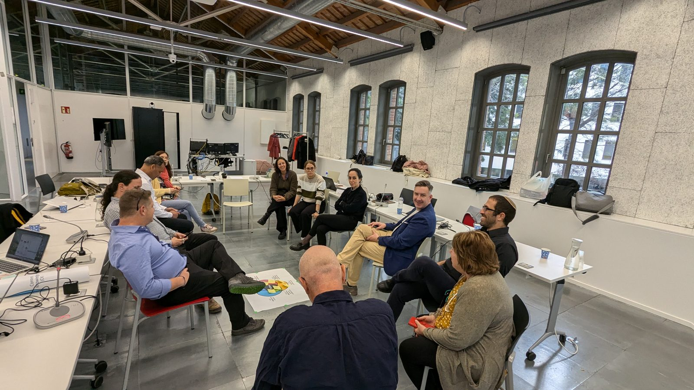
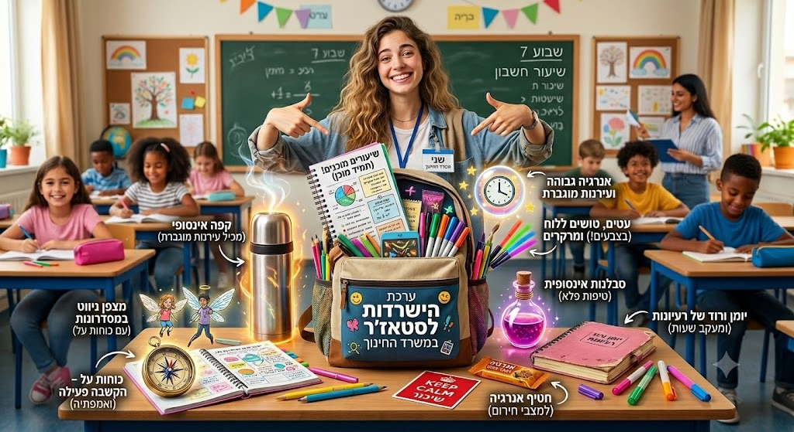
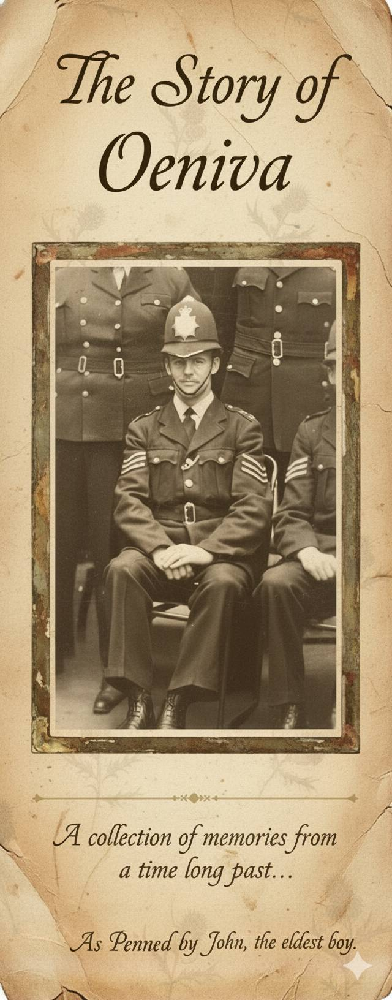
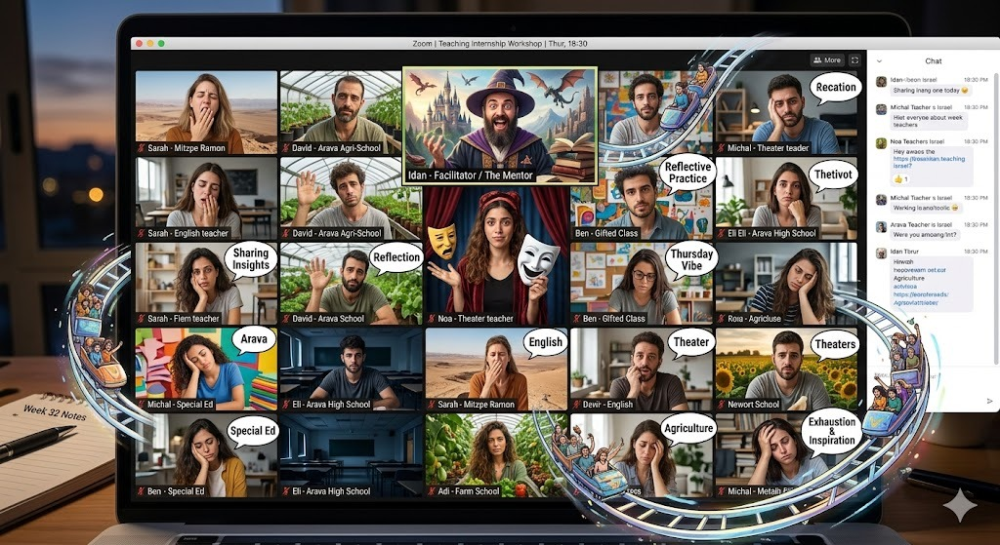

מקרי בוחן
עבודה בשטח
דוגמאות אמיתיות לפרויקטים, שיתופי פעולה והתמחות מתמשכת בתחום הבינה המלאכותית בחינוך.

ייעוץ למחלקת מחשוב — מכללת קיי
ליווי המחלקה בנושא שימוש בבינה מלאכותית וחוויית משתמש, ושותפות בפרויקט הטמעת הבוט הארגוני החדש של המכללה.
אתגר: הצורך לשלב בינה מלאכותית בתהליכים ארגוניים תוך שמירה על חוויית משתמש טובה.
גישה: ייעוץ צמוד לצוות המחשוב ובנייה משותפת של הבוט המוסדי.
תוצאה: 8 חודשי ליווי: שיפור בממשק המשתמש ובשביעות רצון המרצים, זרימת עבודה טובה יותר וקשר הדוק עם מרצי המכללה, ומעבר מוצלח לאתר ולמערכת החדשים בחיכוך מינימלי. כרגע בעבודה על הבוט החדש של האתר.

ליווי תוכנית הבינה המלאכותית — המכון הדמוקרטי
ליווי שוטף של תוכנית הבינה המלאכותית במכון הדמוקרטי במכללת קיי, כולל תכנון פדגוגי והדרכת סגל.
אתגר: שילוב בינה מלאכותית בתפיסה החינוכית הייחודית של המכון.
גישה: ייעוץ למעבר ארגוני רחב לשימוש בבינה מלאכותית, לרבות הובלת ההאקתון החינוכי בשיתוף מכללת בית ברל.
תוצאה: פיתוח פדגוגיות ופרקטיקות חדשות לחינוך בעידן הבינה המלאכותית — תהליך פעיל ומתפתח.

השתלמות למורים חדשים — מגמת דאטא וניתוח נתונים
הובלת השתלמות מקצועית למורים חדשים בתחום הדאטא וניתוח נתונים, בשילוב כלי בינה מלאכותית.
אתגר: הקניית מיומנויות דאטא רלוונטיות למורים חדשים בתחילת דרכם.
גישה: הכשרה מעשית המשלבת ניתוח נתונים וכלי AI, ב-10 מפגשים.
תוצאה: 37 משתתפים, משוב מצוין — ובעקבותיו התבקשתי להוביל עוד שתי תוכניות נוספות בשנה הבאה.

תוכנית המנטורים — אבני ראשה
בניית אתר מותאם וחומרי למידה נוספים עבור תוכנית המנטורים של אבני ראשה. עבדתי עם התוכנית בשנה האחרונה, וממשיך ללוות אותם גם השנה.
אתגר: צורך בנוכחות דיגיטלית מותאמת ובחומרים תומכים לתוכנית המנטורים, בלוח זמנים צפוף בהתאם לדרישות הלקוח.
גישה: עיצוב ובניית אתר ותכנים ייעודיים לתוכנית תוך עמידה בלוחות הזמנים.
תוצאה: אתר פעיל וחומרים המשמשים את התוכנית — ליווי מתמשך גם השנה.

התמחות "ללמוד וללמד" — מכון מופ״ת
חלק מתוכנית ההתמחות "ללמוד וללמד" במכון מופ״ת, בבית הספר להתמחות מקצועית (קמפוס לוינסקי).
אתגר: העמקת ההתמחות המקצועית בהכשרת מורי מורים.
גישה: לימודי תעודה דו-שנתיים במכון מופ״ת.
תוצאה: ההתמחות תחל בשנת הלימודים תשפ״ז.
פרסום אקדמי — כתב העת "קולות"
מאמר משותף עם ד"ר מירב אסף על עתיד החינוך בעידן הבינה המלאכותית, שראה אור בכתב העת "קולות" (גיליון 32, יוני 2026).
אתגר: לתאר את תפקיד מערכת החינוך בעידן של אי-ודאות טכנולוגית.
גישה: כתיבה משותפת המשלבת מחקר ותובנות מהשטח.
תוצאה: מאמר פורסם — קראו עוד בעמוד המאמרים ←